차근차근 시퀀스 Inviting Sequences
여느 때 못지않게 새로 유행하는 기술에 대한 수업과 프로그램들이 신설되고 사라지며 “이것만 따라하면” 프롬프트들이 뜨겁게 소비되고 있습니다만, 그럼에도 불구하고 외곽에서 자신을 가르치고 주변을 가르치는 페다고지는 오늘도 “돌아갑니다.” 아니, 돌아간다고 생각하는데요 — 여러분의 페다고지도 잘 돌아가고 있는지요?
저 또한 어떻게든 자신을 가르쳐가며 기술 덕질을 이어가고 있는데요, 특별히 작년부터 미국, 영국, 베트남, 그리고 한국 곳곳에서 워크숍, 수업, 커뮤니티 활동을 통해 페다고지를 돌리고 계시는 분들의 이야기를 모으고 엮는 프로젝트를 진행하고 있습니다. 이번 여름에는 <여성을 위한 열린 기술랩>과 함께 여태까지 모인 이야기들을 나눠보고, 여러분의 배움과 나눔을 아카이브하는 자리를 마련해보려 합니다.
여러분의 배움과 나움의 시간을 담은 한 조각이 있을까요? 예전에 써두신 실라버스, 기획서, 선언문의 일부도 좋습니다. 워크숍 준비 과정에서 발생한 스케치, 작업물이나 교재도 좋습니다. 작은 축제와 농담, 생존과 불화의 기록도 환영합니다. 아카이브라는 좋은 핑계로 자신과 주변을 가르치고 있는 다양한 분들과 만나 이야기나눠보고 싶습니다.
Open Call: <시퀀스>를 모집합니다!
- 여기서 말하는 시퀀스란: 기술 배움 활동 및 기술을 매개하는 예술 배움 현장/워크숍/수업 중 쓰인 자료, 가이드, 프롬프트, 혹은 장치들을 두루 칭합니다. 작업 프로세스를 순차적으로 안내하거나 참여자 반응을 순차적으로 유도하는 장치라는 의미에서 시퀀스라는 표현을 써봤습니다.
- 예: 웹사이트, 슬라이드 쇼, 게임 룰북, 지도, 데모 모형, 소리/영상, 인터랙티브 소프트웨어, 토론 자료, 플로우차트, 질문 묶음, 레시피, 워크북, 카드 덱, 공작 키트, 실라버스, 연성 템플렛, 리딩 리스트, 등
참여 방법
♣︎ 구글 폼 링크 ♣︎
- 2024년 5월 6일 월요일 (오후 11:59) 까지 위 링크로 제안서를 작성해주세요.
- 제안하시는 분의 페다고지 혹은 기술교육관/기술철학관을 잘 드러낼수있는 시퀀스를 기대합니다.
모여진 시퀀스들은:
- 취합하는 과정을 거쳐 are.na로 영문 아카이브하여 웹 출판 및 보존합니다.
- 웹에서 경험할 수 있는 형태로 번역되면 좋을 시퀀스 경우, 제출자 희망시 기술 지원해드립니다.
아카이브 목적
- 활동 기록: 미디어 아트에서 지난 기술 배움 활동을 기록하고 보존합니다.
- 출처 레퍼런스: 배움 자료 및 페다고지를 인덱스화하여 열람을 돕고 인용시 출처 표기를 장려합니다.
- 페다고지 리믹스: 리믹스 및 새로운 배움 활동 개발을 돕습니다.
- 페다고지 연구: 여러분야 및 지역에서 펼쳐지고 있는 기술 배움활동들을 이야기로 엮어냅니다.